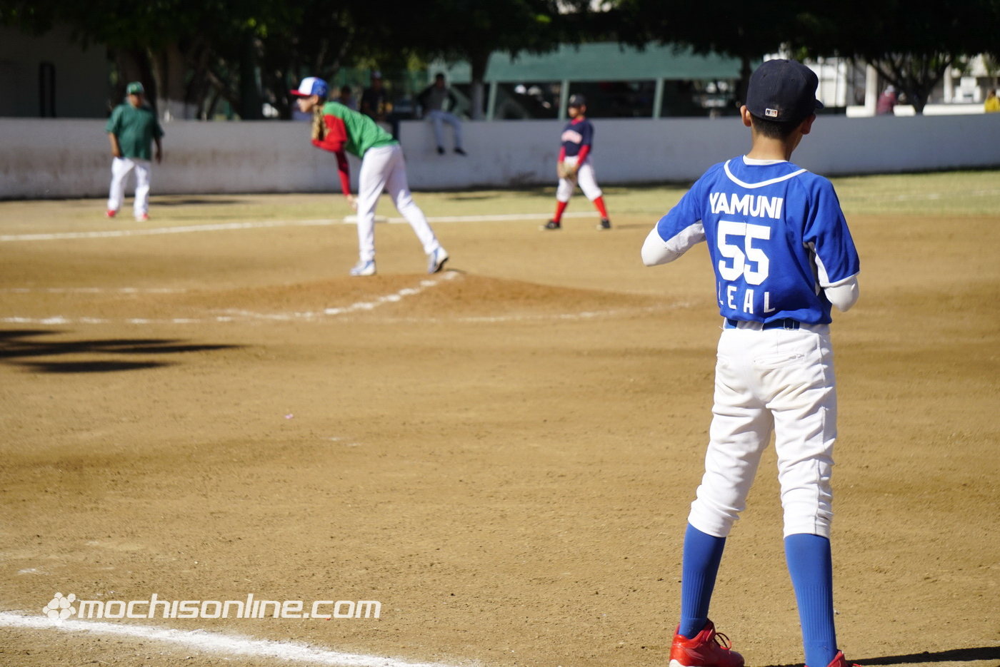

El béisbol es un deporte que ha ido ganando poco a poco mayor número de adeptos, pues cada vez son más las naciones que siguen incorporándolos a sus modalidades deportivas, todo en él es fascinante, desde sus fundamentos teóricos hasta el lenguaje mímico de las señas. El mismo goza de gran popularidad por su dinamismo y posibilidad de debate, hombres, mujeres, niños y ancianos disfrutan de este pasatiempo con verdadero placer.
Tenemos unas muy buenas instalaciones y con un horario muy flectible para poder recibirlas.
